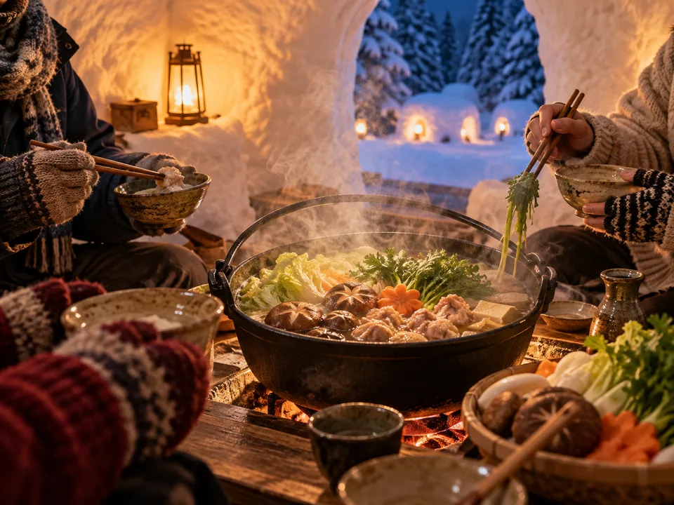
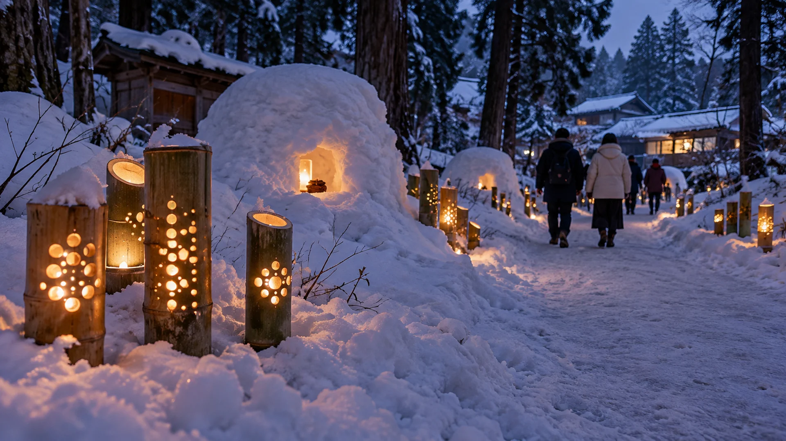
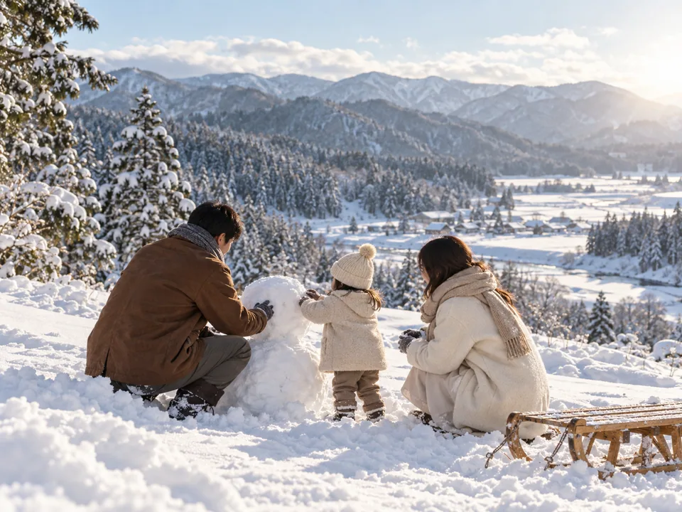

01
インバウンドプラン（鍋・すき焼きプラン）Inbound Plan(Hot Pot & Sukiyaki)
海外からお越しの方向けFor guests visiting from overseas
大人 1名Per adult
¥6,000
小学生School-age child¥5,000
未就学児Preschool child無料Free
大人1名でのご利用Solo adult¥11,000
南会津の雪景色に囲まれたかまくらで、鍋を囲む冬のひととき。Gather around a hot pot inside a snow hut in the mountains of Minamiaizu.


※写真はイメージです。*Illustrative image.
雪でつくられたかまくらの中には、みんなで鍋を囲む食卓をご用意。外の雪景色を楽しみながら、温かい料理をゆっくり味わえます。Inside the snow hut, gather at a table for a warming hot pot meal. Enjoy lunch with family and friends against the snowy backdrop.
南会津の冬を、かまくらで。A winter day in Minamiaizu.
海外からお越しの方向けFor guests visiting from overseas
すき焼き鍋を楽しむプランA sukiyaki hot pot meal
水炊きを楽しむプランA mizutaki chicken hot pot meal
1回の予約でかまくら1棟（最大6名）をご利用いただけます。料金はすべて税込、Web予約・クレジットカード事前決済の場合の価格です。原則2名様から。大人1名の場合はシングル料金が適用されます。未就学児は無料（お椀と箸のみ・食事なし）です。One booking reserves one snow hut for up to six people. All rates include tax and apply to online reservations with advance credit card payment. Generally for two or more guests; a solo adult rate applies. Preschool children are free (bowl and chopsticks only, no meal).
各回75分、1組につきかまくら1棟をご利用いただけます。各時間帯5棟、1棟につき最大6名まで。Each session lasts 75 minutes. One booking reserves one snow hut for up to six guests. Five huts are available per time slot.

かまくらの中で鍋を囲んで、食後は外の雪景色も。冬の南会津で、少し特別なお昼を。Enjoy hot pot inside the snow hut, then step outside to take in the winter scenery.

雪が積もる会場では、竹ランタンの点灯も予定しています。点灯時間などの詳細は、決まり次第お知らせします。Bamboo lanterns are also planned for the snowy venue. Lighting times will be announced once confirmed.
※写真はイメージです。ランタンの点灯時刻は未定で、昼の鍋プランで点灯を見られる保証はありません。*Illustrative image. Lantern lighting times are not yet confirmed and may not overlap with the daytime hot pot sessions.会津鉄道「会津山村道場駅」から徒歩約14分。お車の場合は冬用タイヤ等を装備し、道路状況をご確認ください。Approx. 14 minutes on foot from Aizu-Sanson-Dojo Station. If driving, please use suitable winter tires and check road conditions.
Google マップで見るView on Google Maps

かまくらの利用と宿泊予約は、それぞれ別のサイトでご案内します。Snow hut visits and accommodation have separate booking websites.
かまくらで鍋を楽しむ3つのプランをご案内しています。Three hot pot plans are available for snow hut dining.
※かまくら専用の予約サイトは準備中です。公開後にリンクを有効化します。*The snow hut booking site is not yet available. This link will be activated when it opens.南会津の滞在も一緒に。会津山村リゾートの宿泊予約へ進みます。Stay a little longer in Minamiaizu. Visit Aizu Sanson Resort's accommodation booking website.
宿泊サイトの利用はこちらBook accommodation ※会津山村リゾートの外部予約サイトが開きます。*Opens Aizu Sanson Resort's external reservation website.1棟につき最大6名です。原則2名様からご利用いただけますが、大人1名での利用も可能です（シングル料金適用）。各時間帯の予約枠は5棟です。Each snow hut accommodates up to six guests, with five huts available per time slot. Bookings are generally for two or more people; a solo adult can book at the single-person rate.
無料です。お椀と箸のみをご用意し、食事は付きません。Preschool children are free. A bowl and chopsticks are provided, but no meal is included.
このページでは「かまくら利用＋鍋」のセットプランをご案内しています。食事なしの利用については別途お問い合わせください。The plans shown here include both a snow hut and a hot pot meal. Please contact us about visiting without a meal.
インバウンドプランと国内プラン01は「鍋・すき焼き」、国内プラン02は「水炊き」です。詳しい具材やアレルギー対応は、内容が確定次第ご案内します。Inbound Plan and Domestic Plan 01 feature hot pot and sukiyaki; Domestic Plan 02 features mizutaki. Full ingredients and allergy information will be shared once confirmed.
予約サイトは現在準備中です。予約開始後、専用サイトで希望日時・人数を選んでクレジットカード事前決済を行う予定です。The booking site is being prepared. When it opens, you will be able to choose a date, time and guest count and pay by credit card in advance.
点灯時刻は未定です。昼の鍋プランの時間帯にランタンが点灯していることは保証できません。Lantern lighting times are not yet fixed, so illumination during the daytime hot pot sessions is not guaranteed.